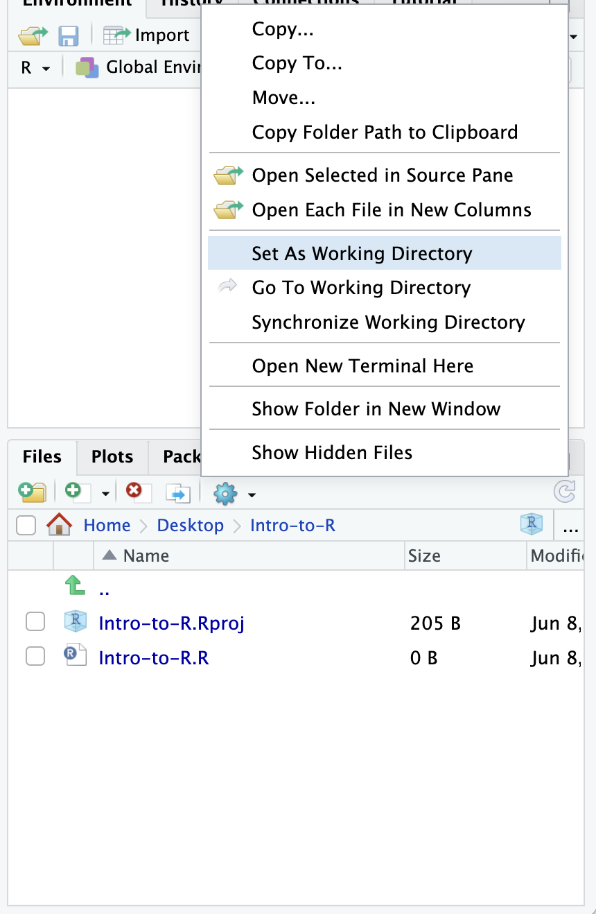

Introduction to R and RStudio
Friday, September 8, 2017
Approximate time: 45 minutes
Learning Objectives
- Describe what R and RStudio are.
- Interact with R using RStudio.
- Familiarize various components of RStudio.
- Employ variables in R.
What is R?
The common misconception is that R is a programming language but in fact it is much more than that. Think of R as an environment for statistical computing and graphics, which brings together a number of features to provide powerful functionality.
The R environment combines:
- effective handling of big data
- collection of integrated tools
- graphical facilities
- simple and effective programming language
Why use R?

R is a powerful, extensible environment. It has a wide range of statistics and general data analysis and visualization capabilities.
- Data handling, wrangling, and storage
- Wide array of statistical methods and graphical techniques available
- Easy to install on any platform and use (and it’s free!)
- Open source with a large and growing community of peers
Examples of R used in the media and science
- “At the BBC data team, we have developed an R package and an R cookbook to make the process of creating publication-ready graphics in our in-house style…” - BBC Visual and Data Journalism cookbook for R graphics
- “R package of data and code behind the stories and interactives at FiveThirtyEight.com, a data-driven journalism website founded by Nate Silver (initially began as a polling aggregation site, but now covers politics, sports, science and pop culture) and owned by ESPN…” - fivethirtyeight Package
- Single Cell RNA-seq Data analysis with Seurat
What is RStudio?
RStudio is freely available open-source Integrated Development Environment (IDE). RStudio provides an environment with many features to make using R easier and is a great alternative to working on R in the terminal.

- Graphical user interface, not just a command prompt
- Great learning tool
- Free for academic use
- Platform agnostic
- Open source
Creating a new project directory in RStudio
Let’s create a new project directory for our “Introduction to R” lesson today.
- Open RStudio
- Go to the
Filemenu and selectNew Project. - In the
New Projectwindow, chooseNew Directory. Then, chooseNew Project. Name your new directoryIntro-to-Rand then “Create the project as subdirectory of:” the Desktop (or location of your choice). - Click on
Create Project.

- After your project is completed, if the project does not
automatically open in RStudio, then go to the
Filemenu, selectOpen Project, and chooseIntro-to-R.Rproj. - When RStudio opens, you will see three panels in the window.
- Go to the
Filemenu and selectNew File, and selectR Script. - Go to the
Filemenu and selectSave As..., typeIntro-to-R.Rand selectSave

The RStudio interface should now look like the screenshot below.
What is a project in RStudio?
It is simply a directory that contains everything related your
analyses for a specific project. RStudio projects are useful when you
are working on context- specific analyses and you wish to keep them
separate. When creating a project in RStudio you associate it with a
working directory of your choice (either an existing one, or a new one).
A . RProj file is created within that directory and that
keeps track of your command history and variables in the environment.
The . RProj file can be used to open the project in its
current state but at a later date.
When a project is (re) opened within RStudio the following actions are taken:
- A new R session (process) is started
- The .RData file in the project’s main directory is loaded, populating the environment with any objects that were present when the project was closed.
- The .Rhistory file in the project’s main directory is loaded into the RStudio History pane (and used for Console Up/Down arrow command history).
- The current working directory is set to the project directory.
- Previously edited source documents are restored into editor tabs
- Other RStudio settings (e.g. active tabs, splitter positions, etc.) are restored to where they were the last time the project was closed.
Information adapted from RStudio Support Site
RStudio Interface
The RStudio interface has four main panels:
- Console: where you can type commands and see output. The console is all you would see if you ran R in the command line without RStudio.
- Script editor: where you can type out commands and save to file. You can also submit the commands to run in the console.
- Environment/History: environment shows all active objects and history keeps track of all commands run in console
- Files/Plots/Packages/Help
Organizing your working directory & setting up
Viewing your working directory
Before we organize our working directory, let’s check to see where our current working directory is located by typing into the console:
getwd()## [1] "/Users/nos491/Desktop/test_intro_r_web/lessons"Your working directory should be the Intro-to-R folder
constructed when you created the project. The working directory is where
RStudio will automatically look for any files you bring in and where it
will automatically save any files you create, unless otherwise
specified.
You can visualize your working directory by selecting the
Files tab from the
Files/Plots/Packages/Help window.
If you wanted to choose a different directory to be your working
directory, you could navigate to a different folder in the
Files tab, then, click on the More dropdown
menu which appears as a Cog and select
Set As Working Directory.

Structuring your working directory
To organize your working directory for a particular analysis, you
should separate the original data (raw data) from intermediate datasets.
For instance, you may want to create a data/ directory
within your working directory that stores the raw data, and have a
results/ directory for intermediate datasets and a
figures/ directory for the plots you will generate.

Let’s create these three directories within your working directory by
clicking on New Folder within the Files
tab.
When finished, your working directory should look like:

Setting up
This is more of a housekeeping task. We will be writing long lines of code in our script editor and want to make sure that the lines “wrap” and you don’t have to scroll back and forth to look at your long line of code.
Click on “Code” at the top of your RStudio screen and select “Soft Wrap Long Lines” in the pull down menu.

Interacting with R
Now that we have our interface and directory structure set up, let’s start playing with R! There are two main ways of interacting with R in RStudio: using the console or by using script editor (plain text files that contain your code).
Console window
The console window (in RStudio, the bottom left panel) is the place where R is waiting for you to tell it what to do, and where it will show the results of a command. You can type commands directly into the console, but they will be forgotten when you close the session.
Let’s test it out:
3 + 5## [1] 8

Script editor
Best practice is to enter the commands in the script
editor, and save the script. You are encouraged to comment
liberally to describe the commands you are running using #.
This way, you have a complete record of what you did, you can easily
show others how you did it and you can do it again later on if
needed.
The Rstudio script editor allows you to ‘send’ the current
line or the currently highlighted text to the R console by clicking on
the Run button in the upper-right hand corner of the script
editor.
Now let’s try entering commands to the script editor
and using the comments character # to add descriptions and
highlighting the text to run:
# Intro to R Lesson
# Feb 16th, 2016
# Interacting with R
## I am adding 3 and 5. R is fun!
3+5

Alternatively, you can run by simply pressing the Ctrl
and Return/Enter keys at the same time as a shortcut.

You should see the command run in the console and output the result.

What happens if we do that same command without the comment symbol
#? Re-run the command after removing the # sign in the
front:
# I am adding 3 and 5. R is fun!
3+5## [1] 8Now R is trying to run that sentence as a command, and it doesn’t work. We get an error in the console “Error: unexpected symbol in”I am” means that the R interpreter did not know what to do with that command.”
Console command prompt
Interpreting the command prompt can help understand when R is ready to accept commands. Below lists the different states of the command prompt and how you can exit a command:
Console is ready to accept commands:
>.
If R is ready to accept commands, the R console shows a
> prompt.
When the console receives a command (by directly typing into the
console or running from the script editor (Ctrl-Enter), R
will try to execute it.
After running, the console will show the results and come back with a
new > prompt to wait for new commands.
Console is waiting for you to enter more data:
+.
If R is still waiting for you to enter more data because it isn’t
complete yet, the console will show a + prompt. It means
that you haven’t finished entering a complete command. Often this can be
due to you having not ‘closed’ a parenthesis or quotation.
Escaping a command and getting a new prompt:
esc
If you’re in Rstudio and you can’t figure out why your command isn’t
running, you can click inside the console window and press
esc to escape the command and bring back a new prompt
>.
Keyboard shortcuts in RStudio
In addition to some of the shortcuts described earlier in this lesson, we have listed a few more that can be helpful as you work in RStudio.
| key | action |
|---|---|
| Ctrl+Enter | Run command from script editor in console |
| ESC | Escape the current command to return to the command prompt |
| Ctrl+1 | Move cursor from console to script editor |
| Ctrl+2 | Move cursor from script editor to console |
| Tab | Use this key to complete a file path |
| Ctrl+Shift+C | Comment the block of highlighted text |
Exercise
- Try highlighting only
3 +from your script editor and running it. Find a way to bring back the command prompt>in the console.
The R syntax
Now that we know how to talk with R via the script editor or the console, we want to use R for something more than adding numbers. To do this, we need to know more about the R syntax.
The main “parts of speech” in R (syntax) include:
- the comments
#and how they are used to document function and its content - variables and functions
- the assignment operator
<- - the
=for arguments in functions
NOTE: indentation and consistency in spacing is used to improve clarity and legibility
We will go through each of these “parts of speech” in more detail, starting with the assignment operator.
Assignment operator
To do useful and interesting things in R, we need to assign
values to variables using the assignment operator,
<-. For example, we can use the assignment operator to
assign the value of 3 to x by executing:
x <- 3The assignment operator (<-) assigns values
on the right to variables on the left.
In RStudio, typing Alt + - (push Alt at
the same time as the - key, on Mac type
option + -) will write <- in a single
keystroke.
Variables
A variable is a symbolic name for (or reference to) information. Variables in computer programming are analogous to “buckets”, where information can be maintained and referenced. On the outside of the bucket is a name. When referring to the bucket, we use the name of the bucket, not the data stored in the bucket.
In the example above, we created a variable or a ‘bucket’ called
x. Inside we put a value, 3.
Let’s create another variable called y and give it a
value of 5.
y <- 5When assigning a value to an variable, R does not print anything to the console. You can force to print the value by using parentheses or by typing the variable name.
y## [1] 5You can also view information on the variable by looking in your
Environment window in the upper right-hand corner of the
RStudio interface.

Now we can reference these buckets by name to perform mathematical operations on the values contained within. What do you get in the console for the following operation:
x + y## [1] 8Try assigning the results of this operation to another variable
called number.
number <- x + yExercises
- Try changing the value of the variable
xto 5. What happens tonumber? - Now try changing the value of variable
yto contain the value 10. What do you need to do, to update the variablenumber?
Tips on variable names
Variables can be given almost any name, such as x,
current_temperature, or subject_id. However,
there are some rules / suggestions you should keep in mind:
- Make your names explicit and not too long.
- Avoid names starting with a number (
2xis not valid butx2is) - Avoid names of fundamental functions in R (e.g.,
if,else,for, see here for a complete list). In general, even if it’s allowed, it’s best to not use other function names (e.g.,c,T,mean,data) as variable names. When in doubt check the help to see if the name is already in use. - Avoid dots (
.) within a variable name as inmy.dataset. There are many functions in R with dots in their names for historical reasons, but because dots have a special meaning in R (for methods) and other programming languages, it’s best to avoid them. - Use nouns for object names and verbs for function names
- Keep in mind that R is case sensitive (e.g.,
genome_lengthis different fromGenome_length) - Be consistent with the styling of your code (where you put spaces, how you name variable, etc.). In R, two popular style guides are Hadley Wickham’s style guide and Google’s.
Interacting with data in R
R is commonly used for handling big data, and so it only makes sense that we learn about R in the context of some kind of relevant data. Let’s take a few minutes to add files to the folders we created and familiarize ourselves with the data.
Adding files to your working directory
You can access the files we need for this workshop using the links
provided below. If you right click on the link, and “Save link as..”.
Choose ~/Desktop/Intro-to-R/data as the destination of the
file. You should now see the file appear in your working directory.
We will discuss these files a bit later in the
lesson.
- Download the normalized counts file by right clicking on this link
- Download metadata file using this link
- Download the functional analysis output file using this link
NOTE: If the files download automatically to some other location on your laptop, you can move them to the your working directory using your file explorer or finder (outside RStudio), or navigating to the files in the
Filestab of the bottom right panel of RStudio
The dataset
In this example dataset, we have collected whole brain samples from 12 mice and want to evaluate expression differences between them. The expression data represents normalized count data obtained from RNA-sequencing of the 12 brain samples. This data is stored in a comma separated values (CSV) file as a 2-dimensional matrix, with each row corresponding to a gene and each column corresponding to a sample.

The metadata
We have another file in which we identify information about the data or metadata. Our metadata is also stored in a CSV file. In this file, each row corresponds to a sample and each column contains some information about each sample.
The first column contains the row names, and note that these are identical to the column names in our expression data file above (albeit, in a slightly different order). The next few columns contain information about our samples that allow us to categorize them. For example, the second column contains genotype information for each sample. Each sample is classified in one of two categories: Wt (wild type) or KO (knockout). What types of categories do you observe in the remaining columns?

R is particularly good at handling this type of categorical data. Rather than simply storing this information as text, the data is represented in a specific data structure which allows the user to sort and manipulate the data in a quick and efficient manner. We will discuss this in more detail as we go through the different lessons in R!
The functional analysis results
We will be using the results of the functional analysis to learn about packages/functions from the Tidyverse suite of integrated packages. These packages are designed to work together to make common data science operations like data wrangling, tidying, reading/writing, parsing, and visualizing, more user-friendly.
Best practices
Before we move on to more complex concepts and getting familiar with the language, we want to point out a few things about best practices when working with R which will help you stay organized in the long run:
- Code and workflow are more reproducible if we can document everything that we do. Our end goal is not just to “do stuff”, but to do it in a way that anyone can easily and exactly replicate our workflow and results. All code should be written in the script editor and saved to file, rather than working in the console.
- The R console should be mainly used to inspect objects, test a function or get help.
- Use
#signs to comment. Comment liberally in your R scripts. This will help future you and other collaborators know what each line of code (or code block) was meant to do. Anything to the right of a#is ignored by R. A shortcut for this is Ctrl+Shift+C if you want to comment an entire chunk of text.
This lesson has been developed by members of the teaching team at the Harvard Chan Bioinformatics Core (HBC). These are open access materials distributed under the terms of the Creative Commons Attribution license (CC BY 4.0), which permits unrestricted use, distribution, and reproduction in any medium, provided the original author and source are credited.
- The materials used in this lesson are adapted from work that is Copyright © Data Carpentry (http://datacarpentry.org/). All Data Carpentry instructional material is made available under the Creative Commons Attribution license (CC BY 4.0).